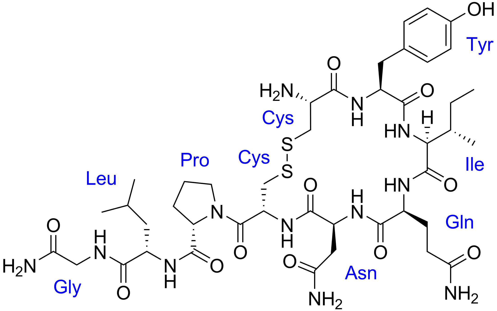
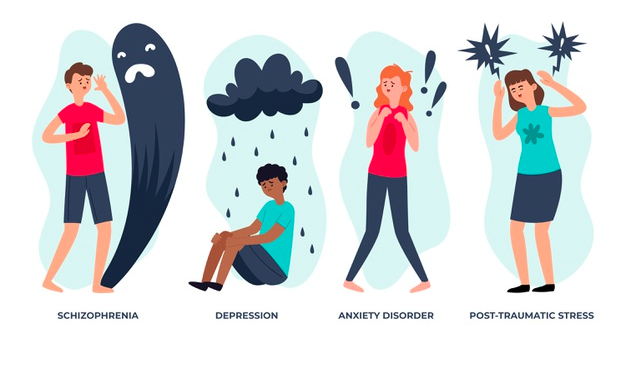

Oxytocin

Oxytocin is considered as both a hormone and a neuromodulator. Oxytocin is involved in multiple functions: childbirth, sex thrive, and social behavior. It is a nine amino acid peptide produced by the paraventricular nucleus and supraoptic nucleus of the hypothalamus. The posterior lobe of the pituitary receives axonal projections from the hypothalamus and oxytocin is released by the neurohypophysis. In addition, oxytocin neurons originating from the PVN form projections with other parts of the brain such as the amygdala, the hippocampus, the nucleus accumbens and the ventral tegmental area.
What triggers the release of oxytocin?
This neuropeptide is released in response to psychological, social and even physical stressors.
Oxytocin inhibits neurons in the amygdala that connects to other brain regions associated with fear such as the anterior cingulate cortex (ACC) and the medial prefrontal cortex (MPC). One of the roles of oxytocin is to reduce the activation of ACC and MPC and thus reduces social anxiety.
CD28 is the cyclic ADP ribose nuclease which is a glycoprotein localized at cell’s surface and is know to control oxytocin release.
Production of oxytocin
Oxytocin is mainly synthesized in the PVN (paraventricular hypothalamic nucleus) and supraoptic nucleus (SON), stored in the Heering bodies and released into the systemic circulation from the posterior pituitary. ADP-ribosyl cyclase activity is high in the hypothalamus and in the posterior pituitary. The lack of CD38 results in the decrease of ADP-ribosyl cyclase activity and thus lower cADPR formation which leads to alterations in OXT secretion in the hypothalamus and the pituitary. When it is released the oxytocin mainly binds to its receptor but it also has a weak affinity for the vasopressin receptor. Oxytocin binds to an oxytocin receptor known as OXTR, which belongs to the G-protein coupled seven transmembrane receptor family.
Histology
Oxytocin is released by the axon terminals of the neurohypophysis in so-called Herring bodies. On electron microscopy images, these are dilated areas in the terminal portion of axons with clusters of neurosecretory granules (containing oxytocin, antidiuretic hormone and neurophysins). Herring bodies often lie close to capillaries, which can be seen on the following image showing the axon terminals of the neurohypophysis.

Causes
Differences in socio behavioral phenotypes are due to genetic and epigenetic causes.

Genetic regulation
Alterations of genes involved in oxytocinergic signaling could be associated with differences in socio behavioral phenotypes.
Principally:
- OXTR: gene coding for the oxytocin receptor
- CD38: oxytocin pathway gene
- OXT: gene coding for oxytocin itself
- AVP: gene coding for vasopressin production
In particular OXTR SNPs (single nucleotide polymorphisms) are associated with structural and functional alterations in limbic circuitry involving the amygdala, the hypothalamus and the cingulate gyrus.
1.Variants in rs53576 allele could be associated with:
more risk for autism, less maternal sensitivity, more feelings of loneliness in healthy females, lower positive affect in male, lower sociability and reliance on social approval and learning from interpersonal feedback
2.Variants in rs2254298 allele could be associated with:
Risk of autism spectrum disorders (ASD), anxiety and depression.
Epigenetic regulation
There are evidence that OXTR methylation may be dynamically regulated by psychosocial stress exposure, and it is associated with high callous unemotional (CU) traits and differential activation of brain regions involved in social perception. Some investigations of hepatoblastoma cell line shown that the methylation of the OXTR CpG island functionally suppresses transcription. It was also identified a region of the OXTR CpG island, termed MT2, which seems to be responsible for most DNA methylation-induced silencing of these constructs.
Oxytocin disorders

Oxytocin disorders are mainly found in autism, depression and anxiety. It has been shown that a high level of oxytocin is correlated to a healthy social behavior. On the contrary low levels of oxytocin lead to a deficit in social behavior.
To treat oxytocin disorders, physicians recently developped intranasal admninistration of oxytocin. Moreover, sildenafil has shown a positive effect in oxytocin levels.